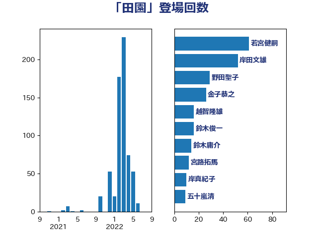

単語「田園」

| 若宮健嗣 | 自由民主党 | 61 回 |
| 岸田文雄 | 自由民主党 | 52 回 |
| 野田聖子 | 自由民主党 | 29 回 |
| 金子恭之 | 自由民主党 | 26 回 |
| 越智隆雄 | 自由民主党 | 16 回 |
| 鈴木俊一 | 自由民主党 | 16 回 |
| 鈴木庸介 | 立憲民主党 | 14 回 |
| 宮路拓馬 | 自由民主党 | 12 回 |
| 岸真紀子 | 立憲民主党 | 10 回 |
| 五十嵐清 | 自由民主党 | 9 回 |
| 赤池誠章 | 自由民主党 | 9 回 |
| 島尻安伊子 | 自由民主党 | 8 回 |
| 阿部司 | 日本維新の会 | 8 回 |
| 高木かおり | 日本維新の会 | 8 回 |
| 中川郁子 | 自由民主党 | 7 回 |
| 中西祐介 | 自由民主党 | 7 回 |
| 石田真敏 | 自由民主党 | 7 回 |
| 若松謙維 | 公明党 | 7 回 |
| 西岡秀子 | 国民民主党 | 7 回 |
| 甘利明 | 自由民主党 | 6 回 |
| 茂木敏充 | 自由民主党 | 6 回 |
| 金城泰邦 | 公明党 | 6 回 |
| おおつき紅葉 | 立憲民主党 | 5 回 |
| 平林晃 | 公明党 | 5 回 |
| 斉藤鉄夫 | 公明党 | 5 回 |
| 柳ヶ瀬裕文 | 日本維新の会 | 5 回 |
| 柳本顕 | 自由民主党 | 5 回 |
| 根本匠 | 自由民主党 | 5 回 |
| 上野通子 | 自由民主党 | 4 回 |
| 住吉寛紀 | 日本維新の会 | 4 回 |
| 古川俊治 | 自由民主党 | 4 回 |
| 吉川赳 | 無所属 | 4 回 |
| 塩崎彰久 | 自由民主党 | 4 回 |
| 小倉將信 | 自由民主党 | 4 回 |
| 滝沢求 | 自由民主党 | 4 回 |
| 片山さつき | 自由民主党 | 4 回 |
| 礒崎哲史 | 国民民主党 | 4 回 |
| 輿水恵一 | 公明党 | 4 回 |
| 吉川元 | 立憲民主党 | 3 回 |
| 坂本祐之輔 | 立憲民主党 | 3 回 |
| 堀井巌 | 自由民主党 | 3 回 |
| 奥下剛光 | 日本維新の会 | 3 回 |
| 山田太郎 | 自由民主党 | 3 回 |
| 岡本三成 | 公明党 | 3 回 |
| 川崎ひでと | 自由民主党 | 3 回 |
| 柴田巧 | 日本維新の会 | 3 回 |
| 渡辺猛之 | 自由民主党 | 3 回 |
| 片山大介 | 日本維新の会 | 3 回 |
| 牧島かれん | 自由民主党 | 3 回 |
| 福島伸享 | 無所属 | 3 回 |
| 福田昭夫 | 立憲民主党 | 3 回 |
| 福重隆浩 | 公明党 | 3 回 |
| 谷公一 | 自由民主党 | 3 回 |
| こやり隆史 | 自由民主党 | 2 回 |
| 井林辰憲 | 自由民主党 | 2 回 |
| 吉田豊史 | 日本維新の会 | 2 回 |
| 堂故茂 | 自由民主党 | 2 回 |
| 奥野総一郎 | 立憲民主党 | 2 回 |
| 小林史明 | 自由民主党 | 2 回 |
| 山際大志郎 | 自由民主党 | 2 回 |
| 岡本あき子 | 立憲民主党 | 2 回 |
| 新谷正義 | 自由民主党 | 2 回 |
| 杉尾秀哉 | 立憲民主党 | 2 回 |
| 松下新平 | 自由民主党 | 2 回 |
| 松山政司 | 自由民主党 | 2 回 |
| 松野博一 | 自由民主党 | 2 回 |
| 石原正敬 | 自由民主党 | 2 回 |
| 竹内真二 | 公明党 | 2 回 |
| 紙智子 | 日本共産党 | 2 回 |
| 赤羽一嘉 | 公明党 | 2 回 |
| 野上浩太郎 | 自由民主党 | 2 回 |
| 高橋光男 | 公明党 | 2 回 |
| 鳩山二郎 | 自由民主党 | 2 回 |
| 下野六太 | 公明党 | 1 回 |
| 中山展宏 | 自由民主党 | 1 回 |
| 中川宏昌 | 公明党 | 1 回 |
| 今枝宗一郎 | 自由民主党 | 1 回 |
| 古川康 | 自由民主党 | 1 回 |
| 吉田久美子 | 公明党 | 1 回 |
| 国光あやの | 自由民主党 | 1 回 |
| 国定勇人 | 自由民主党 | 1 回 |
| 堀場幸子 | 日本維新の会 | 1 回 |
| 大串正樹 | 自由民主党 | 1 回 |
| 大家敏志 | 自由民主党 | 1 回 |
| 安江伸夫 | 公明党 | 1 回 |
| 宗清皇一 | 自由民主党 | 1 回 |
| 小沼巧 | 立憲民主党 | 1 回 |
| 山下雄平 | 自由民主党 | 1 回 |
| 山本順三 | 自由民主党 | 1 回 |
| 岩渕友 | 日本共産党 | 1 回 |
| 平井卓也 | 自由民主党 | 1 回 |
| 早坂敦 | 日本維新の会 | 1 回 |
| 木村次郎 | 自由民主党 | 1 回 |
| 梅村みずほ | 日本維新の会 | 1 回 |
| 武部新 | 自由民主党 | 1 回 |
| 江島潔 | 自由民主党 | 1 回 |
| 沢田良 | 日本維新の会 | 1 回 |
| 河西宏一 | 公明党 | 1 回 |
| 浅田均 | 日本維新の会 | 1 回 |
| 浮島智子 | 公明党 | 1 回 |
| 玄葉光一郎 | 立憲民主党 | 1 回 |
| 玉木雄一郎 | 国民民主党 | 1 回 |
| 田嶋要 | 立憲民主党 | 1 回 |
| 田村まみ | 国民民主党 | 1 回 |
| 田村貴昭 | 日本共産党 | 1 回 |
| 田畑裕明 | 自由民主党 | 1 回 |
| 石井啓一 | 公明党 | 1 回 |
| 石川香織 | 立憲民主党 | 1 回 |
| 稲津久 | 公明党 | 1 回 |
| 空本誠喜 | 日本維新の会 | 1 回 |
| 舟山康江 | 国民民主党 | 1 回 |
| 芳賀道也 | 国民民主党 | 1 回 |
| 若林健太 | 自由民主党 | 1 回 |
| 萩生田光一 | 自由民主党 | 1 回 |
| 葉梨康弘 | 自由民主党 | 1 回 |
| 藤井比早之 | 自由民主党 | 1 回 |
| 藤川政人 | 自由民主党 | 1 回 |
| 藤巻健太 | 日本維新の会 | 1 回 |
| 赤木正幸 | 日本維新の会 | 1 回 |
| 阿達雅志 | 自由民主党 | 1 回 |
| 阿部知子 | 立憲民主党 | 1 回 |
| 青山周平 | 自由民主党 | 1 回 |
| 馬場伸幸 | 日本維新の会 | 1 回 |
| 高村正大 | 自由民主党 | 1 回 |
| 高橋克法 | 自由民主党 | 1 回 |
| 高野光二郎 | 自由民主党 | 1 回 |